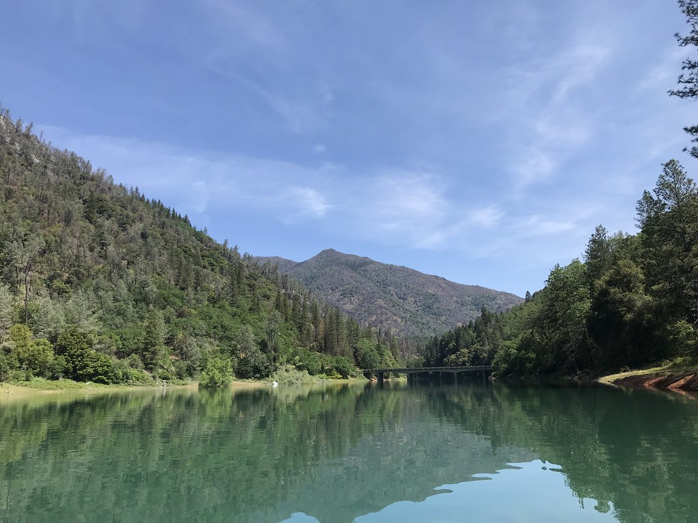

Maxwell Wilson | WDD 130
Hello! My name is Maxwell Wilson and I am from boise idaho, I like to game, code, watch movies, and plenty of other stuff. hoplessly i think this site might endear you to me...
Idaho

Idaho, often referred to as the Gem State, is a captivating blend of natural beauty and rugged landscapes nestled in the northwestern region of the United States. Characterized by its expansive wilderness, Idaho boasts an array of majestic mountain ranges, including the iconic Sawtooths and the towering peaks of the Bitterroot Range. The state is adorned with pristine lakes and meandering rivers, such as the shimmering waters of Lake Coeur d'Alene and the Snake River, which carves its way through deep canyons. Idaho's diverse geography encompasses lush forests, fertile valleys, and high desert plateaus, providing a rich tapestry of ecosystems. Beyond its scenic splendor, Idaho also embraces a culture deeply rooted in outdoor adventure and recreational pursuits, making it a haven for hiking, skiing, fishing, and wildlife enthusiasts. With its warm communities and a slower pace of life, Idaho offers a serene escape for those seeking a harmonious blend of nature's wonders and a tranquil lifestyle.